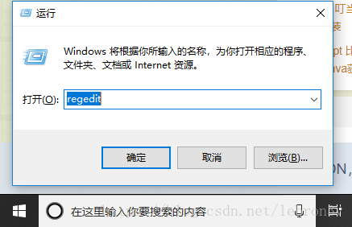
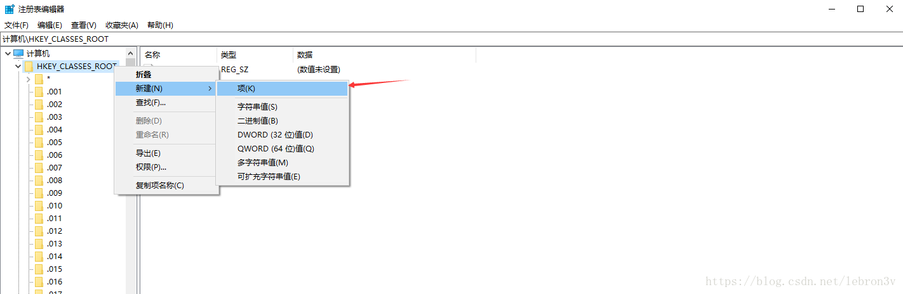
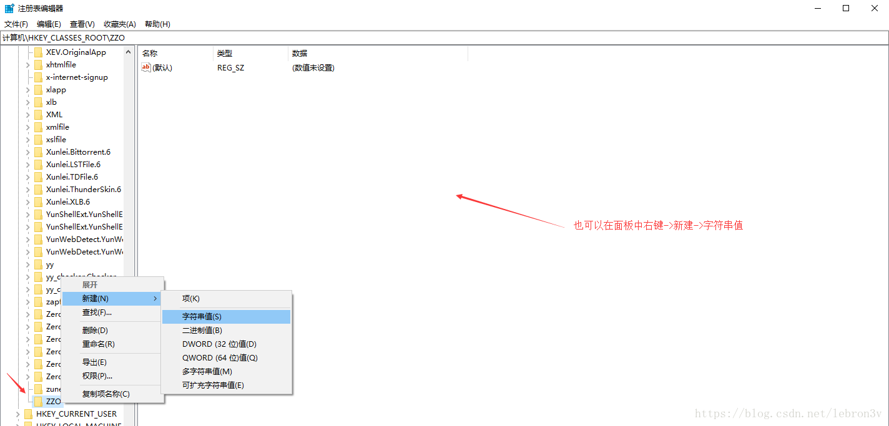
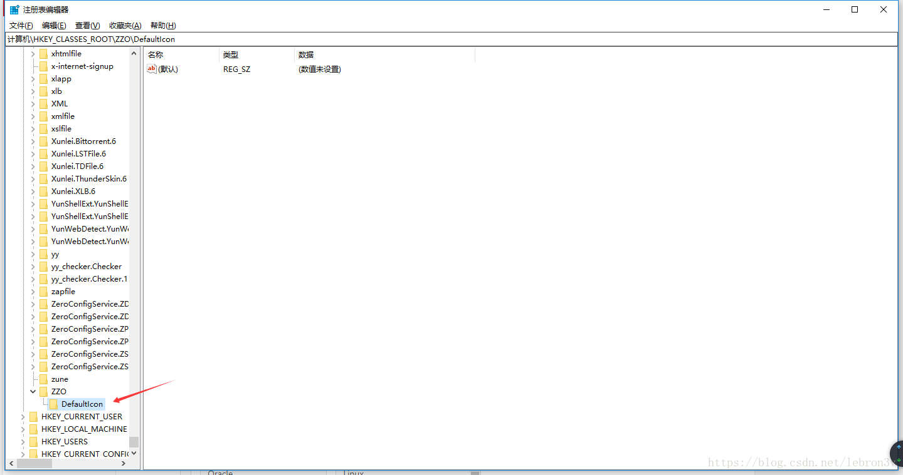
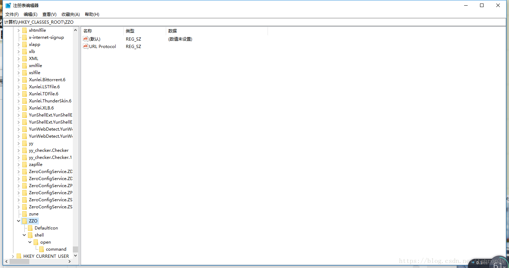
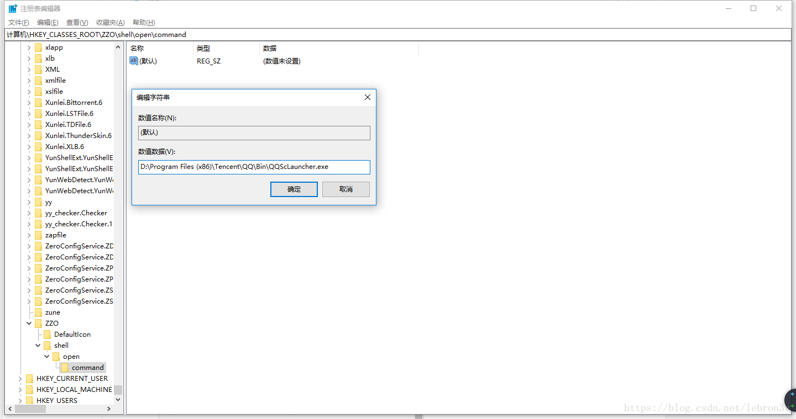
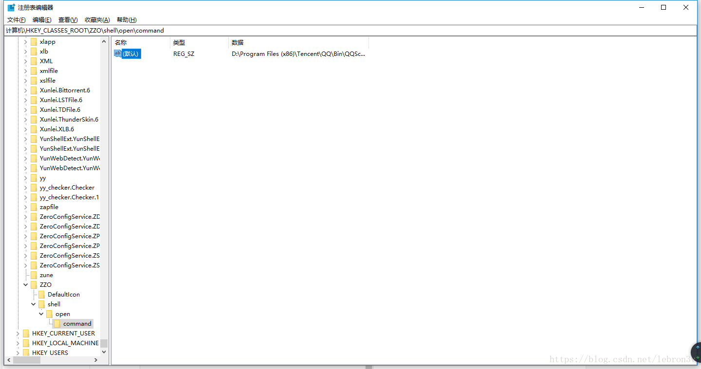
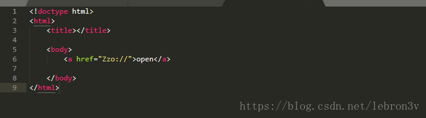
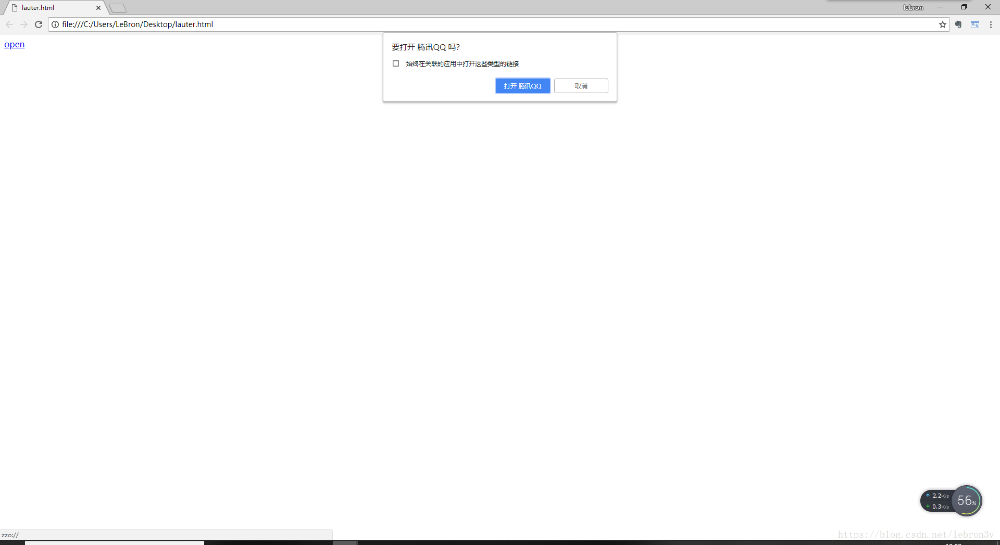
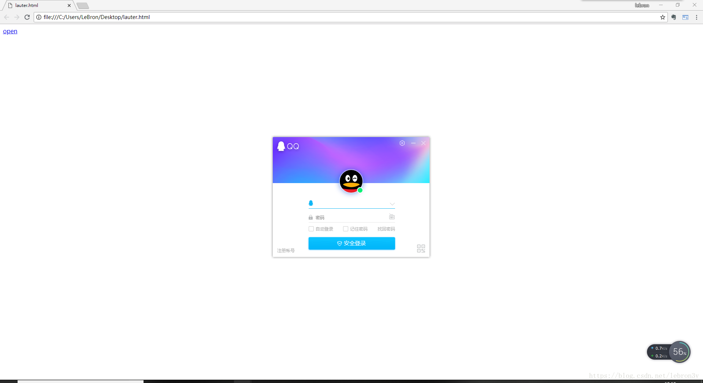

有时候我们想要实现一个功能，就是在HTML页面点击一个链接就能调用打开本地可执行文件。就像腾讯QQ、迅雷这种。
而实现这种功能其实也很简单，就是需要我们添加修改注册表，实现自定义URL Protocol协议。
自定义URL Protocol 协议
一些应用软件可以在浏览器中点击一个url后自动启动，并执行操作。
1. win+r打开注册表，输入regedit进入注册表

2. 在注册表 左边最上面HKEY_CLASSES_ROOT那个树右键新建——项。该项的名称自己命名，其实该名称也是协议的名称，我们调用的时候就是根据该协议调用的，而我这里随便起了一个：ZZO。

3. 然后在该项中右键->新建->字符串值，创建一个URL Protocol的值，其中数据默认为空。

4. 然后在ZZO下新建->项，名字为DefaultIcon

5. 在ZZO下新建->项，名称为shell。并在shell下新建名为open的项。然后在open下新建名为command的项

6. 然后分别修改DefaultIcon 和 command 的值为要调用的程序完整路径.
比如我这里要调用的是QQ，完整路径为：D:\Program Files (x86)\Tencent\QQ\Bin\QQScLauncher.exe


7. 然后我们在html页面添加一个a标签
<a href="Zzo://">open</a>

8. 点击页面按钮


通过网站调用可执行程序，主要是修改注册表,注册 URL Protocol 协议。
注意上面 command 项的值可以为 C:\Program Files (x86)\Qiaoker\updater.exe "%1" ,这个"%1"是传递给 updater.exe的参数。
加了后使用是我们就可以传参数了，
<a href="Uaiqiy://cid:110&username:mjq">
方式二：使用js调起客户端
除了上面那种方式，我们还可以通过调用js函数实现客户端exe程序的调用，但是这种方式局限性很大，目前只支持IE浏览器。
代码如下：
function execProgram() {
var exepath = "D:\\Program Files (x86)\\Tencent\\QQMusic\\QQMusic.exe"
var ws = new ActiveXObject("WScript.Shell");
ws.Exec(exepath);
}
如果想要调用bat脚本或者vbs程序，可以将ActiveXObject 的 Exec()方法替换成Run() 方法。
function execProgram() {
var exepath = "C:\\Users\\LeBron\\Desktop\\新建.vbs"
var ws = new ActiveXObject("WScript.Shell");
ws.Run(exepath);
}
---------------------
作者：lebron3v
来源：CSDN
原文：https://blog.csdn.net/lebron3v/article/details/80736744
版权声明：本文为博主原创文章，转载请附上博文链接！